PLANIFICACIÓN Y ADMINISTRACIÓN DE REDES
Terminales
Dispositivos de red
Canal de comunicaciones
Elementos de interconexión (Hub, switch, router, punto de acceso)
Adaptadores de red
Programas de red
S.O.
TCP/IP (UDP, TCP...)
Netbios (SMB)
NFS (de Unix “Net File System”)
Novell (IPX)
Clientes/servidor
Transmisión de voz
Transmisión de datos
Establecimiento de llamada
Tarificación
Según la titularidad de la red:
Redes dedicadas. Líneas privadas Ej: red local
Redes compartidas. Redes de servicio publico. Ej: red teléfono fijo y móvil ,rdsi, iberpac
Según la topología:
Malla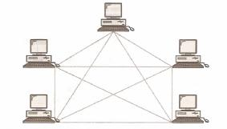
Estrella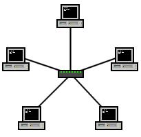
Bus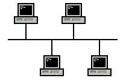
Árbol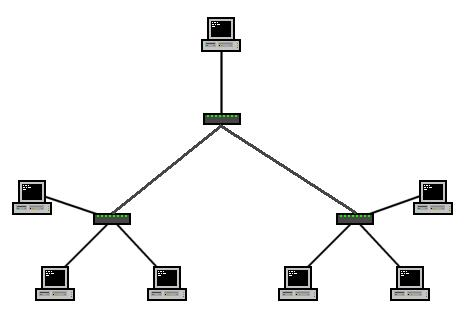
Anillo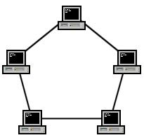
Intersección de anillo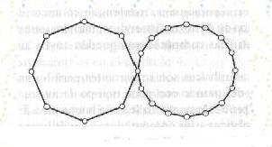
Iregular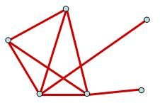
Según la transferencia de información:
Redes conmutadas (punto a punto).
Conmutación de circuitos (telefonía fija)(Se busca 1 vía para llegar hasta el receptor).
Conmutación de paquetes :
Datagrama (cada paquete elige su ruta.): ej: ATM.
Circuito virtual (El primer paquete abre el camino y el resto va por el mismo lugar.): Ej: frame relay.
Conmutación de mensajes: Ej: telégrafo.
Redes de difusión (multipunto): Ej: bus, anillo, wifi,...
Según la localización geográfica:
Subred o segmento de red (comparten el mismo cable ).
LAN.
Red de campus.
Red de área metropolitana(MAN). Recursos publico o privados.
Red de área extensa (WAN). Los enlaces son ofrecidos por empresas de telecomunicaciones.
Es necesario definir un conjunto
común de normas que permiten coordinar a todos los fabricantes.
Las
normas se dividen en 2 categorías:
De Facto (PC, UNIX).
Estándares de Jure(Esta establecido por una organización, tipo ISO)(OSI, ATX).
Organizaciones de normalización y estandarización:
ITU (Unión internacional de comunicaciones).
ISO (Organización internacional de estándares).
ANSI (Instituto americano de normas nacionales).
IEEE (Instituto de ingenieros electrónicos y eléctricos).
IETF (Grupo de trabajo en ingeniería de internet(se encargan de establecer protocolos como TCPIP).
ISC (Consorcio de sistemas de internet) (Define como va a ser DMCP (Reparte IP).
ICANN (IANA) (Corporación de internet Para la asignación de nombres y números).
W3C (Define como tiene que ser el www (World wide web) HTML, CSS, PHP, XMR, etc)).
Open Group(Se encarga de estándares abiertos).
La arquitectura de una red depende de la tecnología utilizada en su construcción, definida en tres aspectos relacionados entre si:
Topología.
Método de acceso a la red (medio compartido o no).
Protocolos de comunicación.
Protocolos de alto nivel: definen como se comunican las aplicaciones.
Protocolos de bajo nivel: definen como se transmiten las señales por el medio de transmisión.
Protocolos intermedios: controlar la transmisiones, detectar errores, establecer y mantener sesiones.
Problemas en el diseño de una arquitectura de red:
Encaminamiento (Es la búsqueda de el destino).
Direccionamiento (Es la identificación (numero) del destino).
Control de errores.
Acceso al medio.
Congestión.
Mantenimiento del orden.
Multiplexación (compartir el medio) (Llega mucha información a un mismo lugar y posiblemente a la vez).
Los protocolos se dividen en capas o niveles para reducir la complejidad de su diseño. Cada una de las capas se construye sobre su predecesor, y cada nivel es responsable de ofrecer servicios a niveles inferiores.
En una jerarquía de protocolos se siguen las siguientes reglas:
Cada nivel dispone de un conjunto de servicios
Los servicios están definidos mediante protocolos estándares
Cada nivel se comunica con su inmediato superior e inferior
Cada nivel ofrece servicios a su inmediato superior.
Protocolo: conjunto de normas que regular la comunicación entre dos niveles iguales.
Interfaz: conjunto de normas y servicios que permite la interconexión entre niveles adyacentes.
Ejemplo:
Protocolo Nivel A <-----------------> Nivel A ^ | | Interfaz | v Nivel B
Los protocolos o arquitecturas mas utilizados son:
Modelo OSI
TCP/IP
ATM (xDSLo cable)
Red de Microsoft (netbios, smb,netbeui)
IPX
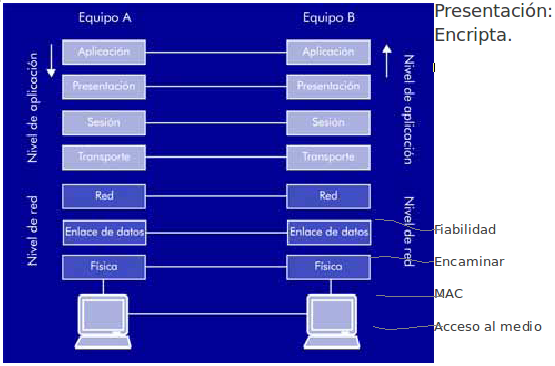
Las capas tienen características propias y cada una de ellas esta destinadas a hacer una cosa.
Sesión: pedir pagina web, direccionamiento y diferenciación de aplicaciones.
Aplicación: Pide por ejemplo el saldo (Banco), Solicitud de envío de imagen JPG, envío de comando para ejecución.
Transporte: División de mensajes para envío en trozos, envío de información de recepción con petición de recibo, solicitud de reenvío de información en caso de perdida.
Físico: Encargado de la distribución de la intensidad por las patillas.
Solicitud de envío de imagen
JPG.
Esta constituida por varias capas o niveles, afronta el
problema de las comunicaciones de datos y las redes informáticas
dividiendo.
Esta estrategia establece dos importantes beneficios:
Mayor comprensión del problema.
La solución de cada problema especifico puede ser optimizada individualmente.
CCIT y ISO forman la torre OSI.
Pretendía ser un modelo básico de referencias, no tuvo la repercusión que se esperaba entre las que destacaban las siguientes:
La complejidad del modelo.
La complejidad de las normas.
El impulso del modelo internet y su simplicidad.
Se comunican en 2 direcciones:
Horizontal: Niveles Homónimos.
Vertical: Entre niveles adyacentes de un mismo sistema.
Los siete niveles/capas:
Nivel físico: Se encarga de las conexiones físicas, tanto del medio físico como la forma. Señal y transmisión binaria.
Envío de bits.
Garantizar la conexión.
Manejar las señales eléctricas.
Definir la señales eléctricas.
Definir el medio por el que va la comunicación.
Características materiales y eléctricas.
Nivel enlace de datos: Direccionamiento físico, topología de red, acceso al medio, detección de errores, control de flujo, distribución de la trama.
Nivel de red: Se encarga de
identificar el enrutamiento, las unidades de información
(Paquetes).
Los datos llegan del origen al destino, dirección de
ruta.
Nivel de transporte:
El
transporte de datos. Conexión de extremo a extremo y fiabilidad de
los datos (Libre de errores).
Nivel de sesión: Comunicación entre dispositivos de la red. Controla el enlace establecido entre dos ordenadores que están transmitiendo datos.
Nivel de presentación: representación de los datos, de manera que aunque distintos equipos puedan tener diferentes representaciones internas de caracteres los datos lleguen de manera reconocible.
Nivel de aplicación: Servicios de
red a las aplicaciones acceder a los servicios de las demás capas y
define los protocolos que utilizan las aplicaciones para
intercambiar datos. Suele interactuar con programas.
Nivel de
enlace y nivel físico los mas importantes ya están dentro de
Ethernet (implementado físicamente).
Es mas simple que el modelo OSI. Algunas capas se agrupan o por no usar algunas capas.
Son abiertos y gratuitos, su desarrollo y modificaciones se hacen por consenso.
Independencia del nivel del software y hardware. Lo que permite distintos equipos interconectarse y formar redes de equipos locales.
Un esquema común de direccionamiento (Permite localizar a otro).
Niveles TCP/IP:
Nivel de enlace: Acceso al medio(nivel 1 y nivel 2 OSI).
Nivel de red: internet (Nivel 3 OSI).
Nivel de transporte: Transporte (Nivel 4 OSI).
Nivel de aplicación.: Nivel 5,6,7 OSI).
Envío de celdas, sin enrutamiento, va por alta velocidad. Las celdas son configurables.
No tiene IP, son circuitos virtuales con mucha velocidad tasa de errores muy baja (ADSL - ATM).
Una señal viene definida por 3 características:
Amplitud (a): voltaje máximo de la señal.
Frecuencia (f): Nº de ciclos por segundo (número de veces que se repite la señal).
Fase: Valor que tiene la señal en un momento dado. F=1/t.
Periodo (t): Tiempo que tarda la señal en realizar un ciclo. 1/f=t.
El ancho de banda de un medio de transmisión es el rango de frecuencias soportadas.
Banda Base: Utiliza todo el ancho de banda para una única transmisión (Ethernet).
Banda Ancha: permite dividir el ancho de banda del canal de transmisión en varios canales (Coaxial del TV).
Analógica a analógica (La televisión.).
Analógico a digital.
Digital a analógico.
Componentes:
Señal portadora: Está modulada por la moduladora, es la que envía.
Señal moduladora: Controla algún parámetro de la portadora, es la que tiene la señal para enviar.
Tipos:
Modulación en amplitud.
Se
modifica la amplitud. Cuando mando un 1 mando con una amplitud de A
y cuando mando un 0 mando con una amplitud de a.
1 = A
0 = a
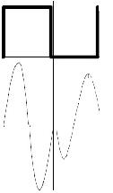
Modulación en frecuencia.
Se
modifica la frecuencia para mandar los datos. Cuando mandamos un 1
mandamos a más frecuencia y cuando mandamos un 0 mandamos a menos
frecuencia. Así con un uno hay más ondas que con un 0 en un
segundo.
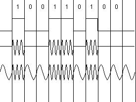
Modulación en fase.
Se cambia
la fase para saber que es, si un 0 o un 1. Lo que se hace es cambiar
como empieza la onda. Este método se ha mejorado con el diferencial
de fase.
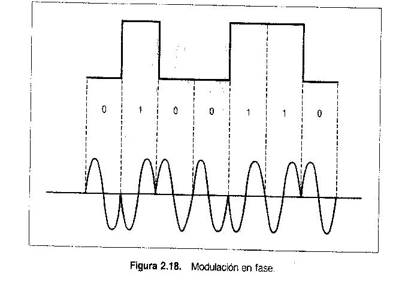
QAM (Modulación amplitud
cuadrática).
Se usan dos amplitudes y dos fases.
Amplitud a
en fase 0, → 00
Amplitud a en fase pi, → 01
Amplitud A en
fase 0, → 10
Amplitud A en fase pi, → 11
En cada señal
que se manda se transportan dos bits. Se aumenta la velocidad.
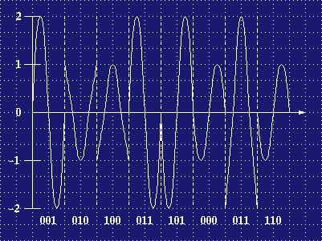
Nuevas tecnologías
Guiado
Par de cables (Rj-11(cable de teléfono)).
Par trenzado (conjunto de cables trenzados y evita la diafonía).
UTP (Par trenzado sin apantalla).
STP (Par trenzado apantallado individualmente).
S/STP (Par trenzado apantallado individualmente y malla global).
FTP (Pantalla conductora global).
Dependiendo del numero de par de cables que tenga un cable, el numero de vueltas por metro que posee su trenzado y los materiales utilizados, tendremos categorías: cat1, cat2……cat5= rj45, cat5e, cat6, cat7=rj-48
Coaxial
Fino
Grueso
Mejor blindaje que el par trenzado
Los tramos entre repetidores mayores, alcanzan mayores distancias y velocidades
En 1Km podemos trasmitir a 1 o 2Gbps
Utilizadas en instalaciones telefónicas por su alta capacidad de transmisión, largo recorrido y multitud de comunicaciones simultaneas
Hoy en día reemplazado por la fibra óptica
Utilizada en TV por cable
Se puede utilizar en:
Banda base (transmisión digital): en distancias de 1Km => 10Mbps
Banda ancha (transmisión analógica): TV y datos a 150Mbps
Fibra óptica
Transmite ondas de luz
Esta compuesto de 3 componentes
Emisor de luz
Led
Láser
Medio de transmisión: fibra de vidrio
Detector: fotodiodo
3 formas de transmitir la luz
Mono modo: La luz se transmite en linea recta (láser)
Multimodo: Se modifica la longitud de onda (Led)
Multimodo índice gradual: Refracción gradual (Led)
Longitud de hasta 30Km
Velocidad en laboratorio 50000Gbps. Redes 1 o 2Gbps
Ventajas frente al coaxial
Maneja ancho de banda mayores
Baja atenuación => distancias mayores
No es interferida por ondas electromagnéticas
Es delgada y ligera
No tiene fugas y es difícil intervenirlas
No guiado
Ondas de radio:
Radio enlaces terrestres.
Radio enlaces satélites.
Microondas (2,5 Ghz)(son microondas entre 1-10ghz)Son las mas utilizadas por WIFI, tienen 12 canales y hay que diferenciarlas para que no haya interferencias.
Infrarrojas:Distancias muy pequeñas, no suele superar los 10 m (mandos TV). Suelen ir encriptadas y son bastante seguras.
Ondas luminosas.
|
Medio |
Volumen máximo de transmisión. |
Distancias máximas |
|---|---|---|
|
Par trenzado |
1 Gbps |
100 m |
|
Coaxial |
2 Gbps |
500 m |
|
Fibra óptica |
>10 Gbps |
2 - 5 km |
|
Ondas de radio |
1 Mbps |
50 - 100 km |
|
Microondas |
100 Mbps |
3 - 5 km |
|
Infrarrojo |
10 Mbps |
20 m |
|
Ondas de luz |
1 Mbps |
1 km |
Ruido: Efectos que interfieren sobre la señal transmitida y la modifican.
Atenuación: Perdida progresiva del nivel de la señal. Solución: mediante repetidores. Generalmente no se usan repetidores ya que los switchs y los hubs hacen de repetidores y es eso lo que se suele poner si hay que hacer una instalación muy larga. Si no tenemos donde enchufar el switch, hay algunos que usan la tecnología POE, que es capaz de alimentar el switch a través del rj45.
Diafonía: Influencia de otros cables próximos. Solución: apantallar el cable.
Ruido impulsivo: Intervención externa de poca duración. Solución: Filtrar la señal.
Ruido Térmico: Es el calor producido por los electrones al moverse.
Capacidad:
Velocidad de modulación (Baudios= ciclos/seg=hz): capacidad del medio de cambiar de estado por segundos.
Velocidad de transmisión (Bps).
Ejemplos:
T = 0,05
Vm = f = 1/T = 20
baudios = ciclos/seg = Hz
La señal que envío puede tener 16
estados distintos.
¿Cual será la velocidad de transmisión? ¿Vt?
Lo primero es saber cuantos bits vamos a enviar en cada uno de esos estados.
2^x = 16 --> 4 bits en cada
estado
Vt = Vm. 4 = 80 bps
Vt = 200bps
Señal de 8 niveles
de amplitud
¿Vm?
Con 8 niveles se pueden mandar
2^x=8 bits --> 3 bits
Vm = Vt/amplitud --> Vm = 200/3 -->
66,66 baudios
Atenuación:
Señal:
5 voltios = 1
0
voltios = 0
Atenuación por km del 5%
Solo se recononce la
señal entre 3 y 5 voltios.
¿Cuantos km puede transmitirse?
Cada km se pierde 0.25 v/km
Como
mucho pueden perderse 2 v --> 2 v /0.25 v/km --> 8km
Comprobadores de continuidad (Voltímetros).
Comprobadores de cableado: Comprueban: diafonía, atenuación, ruido y realizan estadísticas del trafico de red.
Reflector de dominio de tiempo: Los más avanzados, son capaces de medir, empalmes, nudos, radios de curvatura, longitud de los cables, detectan anomalías e indican en qué punto se producen (Pruebas de reflectometría (tdr)), muy utilizados con la fibra óptica.
Continuidad.
Mapeado de hilos.
Resistencia.
Longitud.
Atenuación.
Diafonía
Perdida por retorno.
Ejercicio:
Queremos ver una película de
640x480 de resolución y 16 bits color a 24 fps.
¿Que conexión
mínima necesitamos para verlo con continuidad?
640*480*16*24 = 117964800 bps --> 117,9648 Mbps
Adaptador -- medio de transmisión -- otro dispositivo de interconexión
Adaptador: Convierten la señal digital del ordenador a otra adecuada para ser transmitida por la red. Estos adaptadores se pueden conectar a los distintos puertos del ordenador.
Puerto serie.
Puerto paralelo.
Puerto USB 1.0 = 1,5 Mbps 2.0 = 480 Mbps 3.0 = 6 Gbps
Puerto Firewire. 800 Mbps. Evolución (Wiki).
Ranuras de expansión ISA,
PCI(32 -> 133 MB / 64 bits -> 266 MB).
Tipos de adaptadores:
Módem (winmodem --> interno)
Serie V
Módem (dial-Up) 56 Kbps
Módem RDSI 2x64 Kbps
Módem XDLS
Cable Módem
Las comunicaciones de los módems se realizan utilizando los siguientes protocolos:
PPP (point to point protocol)
PPPoE (point to point protocol over Ethernet)
PPPoA (point to point protocol over ATM)
PPPoEoA (point to point protocol over Ethernet and ATM)
Estas conexiones casi siempre se realizarán sobre un encaminador, para conectarnos con una red de área extensa (WAN).
Tarjetas de red: (NIC) En ellas se encuentran grabados los protocolos físicos y de enlace, la comunicación se realiza a través de las ranuras de expansión (USB, PCI, PCMCIA, …) o se encuentran integradas en la placa.
Pasos a realizar a la hora de transmitir información:
Determinar velocidad de transmisión, longitud del bloque de información (MTU), tamaño de la memoria intermedia (buffer).
Convertir flujo de datos en paralelo a serie.
Codificar la secuencia de bits en señal eléctrica.
Otros dispositivos de interconexión:
Repetidores y amplificadores: Cuando las distancias entre equipos son elevadas y los efectos de la atenuación son intolerables, es necesario. Hoy en día no se utilizan ya que los HUB también amplifican.
Concentradores de cableado (HUB): También llamados repetidores multipuerto, centraliza las conexiones en un único punto.
Dos tipos:
Pasivos: Solo concentran.
Activos: Concentran y regeneran la señal.
Topología física: La
forma en la que se distribuye el cableado. Generalmente todos los
cables de todos los ordenadores de una empresa va a parar a un rack
donde se diseña la lógica de la red, lo que hace que parezca que
es en estrella.
Topología lógica: La forma en la que se
distribuye la red. En .
Lógica en bus.
Lógica en anillo.
Puntos de acceso inalámbricos. En una red inalámbrica tendremos 2 dispositivos:
T. red inalámbrica.
Punto de acceso.
Dos formas de conectarnos a la wi-fi:
Infraestructura (AccessPoint).
Ad-hoc (Conexión compartida a internet).
Ampliar coberturas:
Aumentar RxTx (rx recibir, tx transmitir).
Usar antenas de amplificación:
Omnidireccionables.
Unidireccionables.
Protocolo WDS.
Interconexión de redes distintas:
Puentes:
Se usan para segmentar la red. (802.x (Ethernet - segmento - SW) -
802.11 - WDS).
Hay un proyecto libre que funciona como WDS y que
se puede añadir al firmware de algunos routers. DD-WRT
Puentes transparentes (Reenvío de paquetes - Promiscuo (tarjeta modo promiscuo).
Puentes remotos (Unir dos LAN a largas distancias a través de RTC).
Encaminadores, enrutadores, routers: Trabajan a nivel 3. Se utilizan para interconectar redes que operan con una cepa de red igual, los protocolos de comunicación en ambos lados del encaminador deben ser iguales y compatibles con los niveles superiores al de la red, los niveles inferiores pueden diferir si afectar al encaminamiento. Un router cuando recibe un paquete, extrae la dirección del destinatario y decide cual es la mejor ruta a elegir a partir de un algoritmo y una tabla de encaminamiento. Para elegir el mejor camino un router tiene en cuenta, el nº de saltos, velocidad de transmisión, distancia y condiciones de tráfico.
Un encaminador se utiliza para:
Proporcionar seguridad a través de filtros de paquetes (Firewall).
Integrar diferentes tecnologías de enlace de datos (Ethernet, FDDI, Token Ring, ATM, ...).
Permite la existencia de diferentes alternativas contra congestiones y fallos de comunicación, para ello dispone de un mapa donde figure la topología de la red.
Puertos de un router:
Serie.
RJ45.
FDDI.
RDSI.
XADSL.
Cable.
Consola.
Estructura interna:
Al manejar algoritmos y tablas de enrutamiento funcionan como una CPU, tendrán: UCP, Memoria Principal, sistema básico de entrada/salida (BIOS), sistema operativo (IOS). La memoria principal suele estar dividida en varios tipos, ya que almacenan diferentes tipos de información.
Memoria Volátil: Se borra al apagar el equipo, almacena tablas de encaminamiento, resoluciones ARP y mensajes recibidos.
Memoria No Volátil: Almacena configuraciones, que se pueden modificar, no se borra al apagar.
Memoria Flash: No se borra y contiene el S.O.
Memoria de Solo Lectura: No se puede borrar ni modificar, e incluye los programas de autodiagnóstico y arranque (BIOS).
Pasarelas: Se encarga del
encadenamiento y la interconexión de redes
diferentes(arquitecturas diferentes(TCP/IP, X.25, IPX, ATM, OSI,
...), por tanto son capaces de transformar paquetes de un protocolo
a otro.
Ya no tienen mucho sentido porque ya se han hecho
compatibles
Conmutadores(Switch): Segmentan la red para aumentar su rendimiento, cada boca del Switch es un segmento => conmuta, trabaja a nivel de enlace. Utilizan las MAC para comunicarse, por lo tanto tiene que tener una caché con la lista de MACs que están conectadas a un puerto.
Dominio de colisión: Área donde 2 o más paquetes pueden colisionar. Cada una de las bocas es un dominio de colisión. Un switch tiene tantos dominios de colisión como bocas tenga.
Domino de broadcast: Zonas donde
se propagan paquetes tipos broadcast (dentro de la red). Cuando
hacemos broadcast mandamos paquetes a toda la red (Ejemplo: ARP).
La IP de destino al hacer broadcast termina en .255 (Ejemplo:
192.168.1.255).
El broadcas solo trabaja a nivel de LAN, no
pasan por los routers.
<h2>Algo</h2>